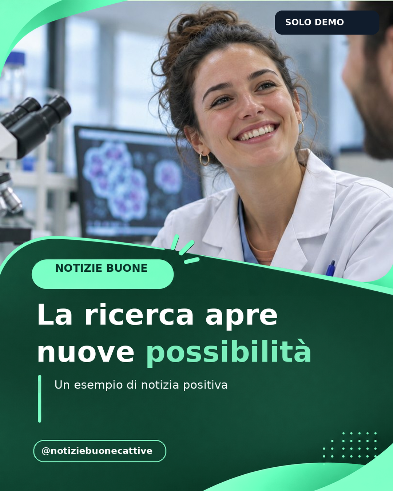

NOTIZIE BUONE
La ricerca apre nuove possibilità
ANTEPRIMA — NON PUBBLICATA
Carosello: Slide 1 Slide 2 Slide 3
Grafica dimostrativa. Nessuna notizia reale: testo e fotografia sintetici, non pubblicati.
Fonti consultate- Simulazione, nessuna fonte
Fotografia sintetica, utilizzata esclusivamente come simulazione grafica.